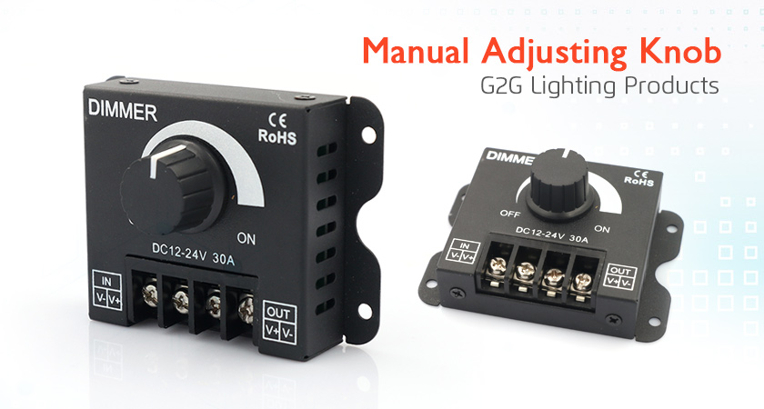

<div class="product-details margit-top110">
	<div class="container">
		<div>
			
		</div>
		<div class="row bottom-line">
			<div class="col-xs-12 col-sm-7 col-md-7">
				<p>Universal single color LED dimmer can dim any 12VDC to 24VDC LED products,Knob control for full intensity adjustment range. Maximum Load is 30 Amps, has removable screw terminal connector for power in and out connections</p>
			</div>
			<div class="col-xs-12 col-sm-5 col-md-5">
				<a class="download_layout" download="" href="download_files/Dimmer.pdf">Download The Product Catalog</a>
			</div>
		</div>
		<div class="row product-features">
			<h3>LED MODULES FEATURES</h3>
			<p>
				• 0~100% adjustable in brightness,change the brightness softly and steadily.
				<br> •Use the PWM technology to protect your lights from damaging of the current shock.
				<br> •Change the brightness of your lights by controlling the output power and current.
				<br> •Mainly use to change the brightness of single color LED lights/light bar.
				<br> •Not suitable for RGB LED lights
				<br>

			</p>

		</div>
   		<div class="row product-features">
			<h3>Controller Specifications</h3>
			<div class="col-md-4 features">
				<p>
					<span>Dimming range:</span>
					<br>0.3%~100% stepless dimming
				</p>
				<p>
					<span>Input voltage:</span>
					<br>DC 12V-24V

				</p>
				<p>
					<span>Input Current:</span>
					<br>less than 30A
				</p>
				<p>
					<span>Power</span>
					<br>360W-720W
				</p>
			</div>
			<div class="col-md-4 features">
				<p>
					<span>Working Temperature:</span>
					<br>-20~60℃
				</p>
				<p>
					<span>Dimension:</span>
					<br>66mm(L) X 61mm(W) X 20mm(H)

				</p>
				<p>
					<span>weight:</span>
					<br>90g

				</p>

			</div>
		</div>
		<h3>Installation Diagram</h3>
		<div>
			
		</div>


	</div>
</div>